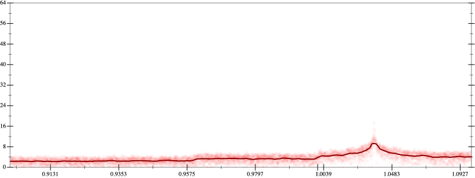
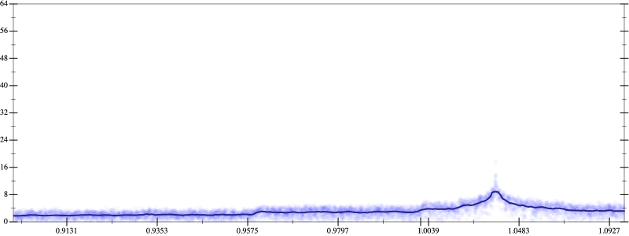
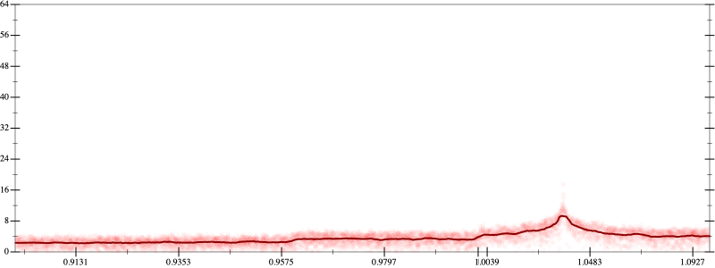
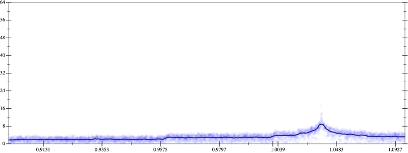

Initial program 3.5
\[\left(\left(\left(\left(-30240.0 + 302400.0 \cdot \left(x \cdot x\right)\right) + -403200.0 \cdot \left(\left(\left(x \cdot x\right) \cdot x\right) \cdot x\right)\right) + 161280.0 \cdot \left(\left(\left(\left(\left(x \cdot x\right) \cdot x\right) \cdot x\right) \cdot x\right) \cdot x\right)\right) + -23040.0 \cdot \left(\left(\left(\left(\left(\left(\left(x \cdot x\right) \cdot x\right) \cdot x\right) \cdot x\right) \cdot x\right) \cdot x\right) \cdot x\right)\right) + 1024.0 \cdot \left(\left(\left(\left(\left(\left(\left(\left(\left(x \cdot x\right) \cdot x\right) \cdot x\right) \cdot x\right) \cdot x\right) \cdot x\right) \cdot x\right) \cdot x\right) \cdot x\right)\]
- Using strategy
rm Applied add-cube-cbrt3.6
\[\leadsto \color{blue}{\left(\sqrt[3]{\left(\left(\left(-30240.0 + 302400.0 \cdot \left(x \cdot x\right)\right) + -403200.0 \cdot \left(\left(\left(x \cdot x\right) \cdot x\right) \cdot x\right)\right) + 161280.0 \cdot \left(\left(\left(\left(\left(x \cdot x\right) \cdot x\right) \cdot x\right) \cdot x\right) \cdot x\right)\right) + -23040.0 \cdot \left(\left(\left(\left(\left(\left(\left(x \cdot x\right) \cdot x\right) \cdot x\right) \cdot x\right) \cdot x\right) \cdot x\right) \cdot x\right)} \cdot \sqrt[3]{\left(\left(\left(-30240.0 + 302400.0 \cdot \left(x \cdot x\right)\right) + -403200.0 \cdot \left(\left(\left(x \cdot x\right) \cdot x\right) \cdot x\right)\right) + 161280.0 \cdot \left(\left(\left(\left(\left(x \cdot x\right) \cdot x\right) \cdot x\right) \cdot x\right) \cdot x\right)\right) + -23040.0 \cdot \left(\left(\left(\left(\left(\left(\left(x \cdot x\right) \cdot x\right) \cdot x\right) \cdot x\right) \cdot x\right) \cdot x\right) \cdot x\right)}\right) \cdot \sqrt[3]{\left(\left(\left(-30240.0 + 302400.0 \cdot \left(x \cdot x\right)\right) + -403200.0 \cdot \left(\left(\left(x \cdot x\right) \cdot x\right) \cdot x\right)\right) + 161280.0 \cdot \left(\left(\left(\left(\left(x \cdot x\right) \cdot x\right) \cdot x\right) \cdot x\right) \cdot x\right)\right) + -23040.0 \cdot \left(\left(\left(\left(\left(\left(\left(x \cdot x\right) \cdot x\right) \cdot x\right) \cdot x\right) \cdot x\right) \cdot x\right) \cdot x\right)}} + 1024.0 \cdot \left(\left(\left(\left(\left(\left(\left(\left(\left(x \cdot x\right) \cdot x\right) \cdot x\right) \cdot x\right) \cdot x\right) \cdot x\right) \cdot x\right) \cdot x\right) \cdot x\right)\]
Applied simplify3.2
\[\leadsto \color{blue}{\left(\sqrt[3]{\left(\left(x \cdot x\right) \cdot \left(x \cdot x\right)\right) \cdot \left(\left(x \cdot x\right) \cdot 161280.0 + -403200.0\right) + \left(\left(\left(x \cdot x\right) \cdot 302400.0 + -30240.0\right) + \left(\left(x \cdot x\right) \cdot -23040.0\right) \cdot {\left(x \cdot x\right)}^{3}\right)} \cdot \sqrt[3]{\left(\left(x \cdot x\right) \cdot \left(x \cdot x\right)\right) \cdot \left(\left(x \cdot x\right) \cdot 161280.0 + -403200.0\right) + \left(\left(\left(x \cdot x\right) \cdot 302400.0 + -30240.0\right) + \left(\left(x \cdot x\right) \cdot -23040.0\right) \cdot {\left(x \cdot x\right)}^{3}\right)}\right)} \cdot \sqrt[3]{\left(\left(\left(-30240.0 + 302400.0 \cdot \left(x \cdot x\right)\right) + -403200.0 \cdot \left(\left(\left(x \cdot x\right) \cdot x\right) \cdot x\right)\right) + 161280.0 \cdot \left(\left(\left(\left(\left(x \cdot x\right) \cdot x\right) \cdot x\right) \cdot x\right) \cdot x\right)\right) + -23040.0 \cdot \left(\left(\left(\left(\left(\left(\left(x \cdot x\right) \cdot x\right) \cdot x\right) \cdot x\right) \cdot x\right) \cdot x\right) \cdot x\right)} + 1024.0 \cdot \left(\left(\left(\left(\left(\left(\left(\left(\left(x \cdot x\right) \cdot x\right) \cdot x\right) \cdot x\right) \cdot x\right) \cdot x\right) \cdot x\right) \cdot x\right) \cdot x\right)\]
Applied simplify3.1
\[\leadsto \left(\sqrt[3]{\left(\left(x \cdot x\right) \cdot \left(x \cdot x\right)\right) \cdot \left(\left(x \cdot x\right) \cdot 161280.0 + -403200.0\right) + \left(\left(\left(x \cdot x\right) \cdot 302400.0 + -30240.0\right) + \left(\left(x \cdot x\right) \cdot -23040.0\right) \cdot {\left(x \cdot x\right)}^{3}\right)} \cdot \sqrt[3]{\left(\left(x \cdot x\right) \cdot \left(x \cdot x\right)\right) \cdot \left(\left(x \cdot x\right) \cdot 161280.0 + -403200.0\right) + \left(\left(\left(x \cdot x\right) \cdot 302400.0 + -30240.0\right) + \left(\left(x \cdot x\right) \cdot -23040.0\right) \cdot {\left(x \cdot x\right)}^{3}\right)}\right) \cdot \color{blue}{\sqrt[3]{\left(-30240.0 + \left(\left(x \cdot -403200.0\right) \cdot {x}^{3} + x \cdot \left(x \cdot 302400.0\right)\right)\right) + \left({x}^{3} \cdot {x}^{3}\right) \cdot \left(\left(x \cdot x\right) \cdot -23040.0 + 161280.0\right)}} + 1024.0 \cdot \left(\left(\left(\left(\left(\left(\left(\left(\left(x \cdot x\right) \cdot x\right) \cdot x\right) \cdot x\right) \cdot x\right) \cdot x\right) \cdot x\right) \cdot x\right) \cdot x\right)\]
- Using strategy
rm Applied associate-+r+3.1
\[\leadsto \left(\sqrt[3]{\left(\left(x \cdot x\right) \cdot \left(x \cdot x\right)\right) \cdot \left(\left(x \cdot x\right) \cdot 161280.0 + -403200.0\right) + \left(\left(\left(x \cdot x\right) \cdot 302400.0 + -30240.0\right) + \left(\left(x \cdot x\right) \cdot -23040.0\right) \cdot {\left(x \cdot x\right)}^{3}\right)} \cdot \sqrt[3]{\color{blue}{\left(\left(\left(x \cdot x\right) \cdot \left(x \cdot x\right)\right) \cdot \left(\left(x \cdot x\right) \cdot 161280.0 + -403200.0\right) + \left(\left(x \cdot x\right) \cdot 302400.0 + -30240.0\right)\right) + \left(\left(x \cdot x\right) \cdot -23040.0\right) \cdot {\left(x \cdot x\right)}^{3}}}\right) \cdot \sqrt[3]{\left(-30240.0 + \left(\left(x \cdot -403200.0\right) \cdot {x}^{3} + x \cdot \left(x \cdot 302400.0\right)\right)\right) + \left({x}^{3} \cdot {x}^{3}\right) \cdot \left(\left(x \cdot x\right) \cdot -23040.0 + 161280.0\right)} + 1024.0 \cdot \left(\left(\left(\left(\left(\left(\left(\left(\left(x \cdot x\right) \cdot x\right) \cdot x\right) \cdot x\right) \cdot x\right) \cdot x\right) \cdot x\right) \cdot x\right) \cdot x\right)\]
- Using strategy
rm Applied flip-+3.1
\[\leadsto \left(\sqrt[3]{\left(\left(x \cdot x\right) \cdot \left(x \cdot x\right)\right) \cdot \left(\left(x \cdot x\right) \cdot 161280.0 + -403200.0\right) + \left(\left(\left(x \cdot x\right) \cdot 302400.0 + -30240.0\right) + \left(\left(x \cdot x\right) \cdot -23040.0\right) \cdot {\left(x \cdot x\right)}^{3}\right)} \cdot \sqrt[3]{\color{blue}{\frac{\left(\left(\left(x \cdot x\right) \cdot \left(x \cdot x\right)\right) \cdot \left(\left(x \cdot x\right) \cdot 161280.0 + -403200.0\right)\right) \cdot \left(\left(\left(x \cdot x\right) \cdot \left(x \cdot x\right)\right) \cdot \left(\left(x \cdot x\right) \cdot 161280.0 + -403200.0\right)\right) - \left(\left(x \cdot x\right) \cdot 302400.0 + -30240.0\right) \cdot \left(\left(x \cdot x\right) \cdot 302400.0 + -30240.0\right)}{\left(\left(x \cdot x\right) \cdot \left(x \cdot x\right)\right) \cdot \left(\left(x \cdot x\right) \cdot 161280.0 + -403200.0\right) - \left(\left(x \cdot x\right) \cdot 302400.0 + -30240.0\right)}} + \left(\left(x \cdot x\right) \cdot -23040.0\right) \cdot {\left(x \cdot x\right)}^{3}}\right) \cdot \sqrt[3]{\left(-30240.0 + \left(\left(x \cdot -403200.0\right) \cdot {x}^{3} + x \cdot \left(x \cdot 302400.0\right)\right)\right) + \left({x}^{3} \cdot {x}^{3}\right) \cdot \left(\left(x \cdot x\right) \cdot -23040.0 + 161280.0\right)} + 1024.0 \cdot \left(\left(\left(\left(\left(\left(\left(\left(\left(x \cdot x\right) \cdot x\right) \cdot x\right) \cdot x\right) \cdot x\right) \cdot x\right) \cdot x\right) \cdot x\right) \cdot x\right)\]
- Using strategy
rm Applied distribute-lft-in3.0
\[\leadsto \left(\sqrt[3]{\left(\left(x \cdot x\right) \cdot \left(x \cdot x\right)\right) \cdot \left(\left(x \cdot x\right) \cdot 161280.0 + -403200.0\right) + \left(\left(\left(x \cdot x\right) \cdot 302400.0 + -30240.0\right) + \left(\left(x \cdot x\right) \cdot -23040.0\right) \cdot {\left(x \cdot x\right)}^{3}\right)} \cdot \sqrt[3]{\frac{\left(\left(\left(x \cdot x\right) \cdot \left(x \cdot x\right)\right) \cdot \left(\left(x \cdot x\right) \cdot 161280.0 + -403200.0\right)\right) \cdot \color{blue}{\left(\left(\left(x \cdot x\right) \cdot \left(x \cdot x\right)\right) \cdot \left(\left(x \cdot x\right) \cdot 161280.0\right) + \left(\left(x \cdot x\right) \cdot \left(x \cdot x\right)\right) \cdot -403200.0\right)} - \left(\left(x \cdot x\right) \cdot 302400.0 + -30240.0\right) \cdot \left(\left(x \cdot x\right) \cdot 302400.0 + -30240.0\right)}{\left(\left(x \cdot x\right) \cdot \left(x \cdot x\right)\right) \cdot \left(\left(x \cdot x\right) \cdot 161280.0 + -403200.0\right) - \left(\left(x \cdot x\right) \cdot 302400.0 + -30240.0\right)} + \left(\left(x \cdot x\right) \cdot -23040.0\right) \cdot {\left(x \cdot x\right)}^{3}}\right) \cdot \sqrt[3]{\left(-30240.0 + \left(\left(x \cdot -403200.0\right) \cdot {x}^{3} + x \cdot \left(x \cdot 302400.0\right)\right)\right) + \left({x}^{3} \cdot {x}^{3}\right) \cdot \left(\left(x \cdot x\right) \cdot -23040.0 + 161280.0\right)} + 1024.0 \cdot \left(\left(\left(\left(\left(\left(\left(\left(\left(x \cdot x\right) \cdot x\right) \cdot x\right) \cdot x\right) \cdot x\right) \cdot x\right) \cdot x\right) \cdot x\right) \cdot x\right)\]
Applied distribute-lft-in3.1
\[\leadsto \left(\sqrt[3]{\left(\left(x \cdot x\right) \cdot \left(x \cdot x\right)\right) \cdot \left(\left(x \cdot x\right) \cdot 161280.0 + -403200.0\right) + \left(\left(\left(x \cdot x\right) \cdot 302400.0 + -30240.0\right) + \left(\left(x \cdot x\right) \cdot -23040.0\right) \cdot {\left(x \cdot x\right)}^{3}\right)} \cdot \sqrt[3]{\frac{\color{blue}{\left(\left(\left(\left(x \cdot x\right) \cdot \left(x \cdot x\right)\right) \cdot \left(\left(x \cdot x\right) \cdot 161280.0 + -403200.0\right)\right) \cdot \left(\left(\left(x \cdot x\right) \cdot \left(x \cdot x\right)\right) \cdot \left(\left(x \cdot x\right) \cdot 161280.0\right)\right) + \left(\left(\left(x \cdot x\right) \cdot \left(x \cdot x\right)\right) \cdot \left(\left(x \cdot x\right) \cdot 161280.0 + -403200.0\right)\right) \cdot \left(\left(\left(x \cdot x\right) \cdot \left(x \cdot x\right)\right) \cdot -403200.0\right)\right)} - \left(\left(x \cdot x\right) \cdot 302400.0 + -30240.0\right) \cdot \left(\left(x \cdot x\right) \cdot 302400.0 + -30240.0\right)}{\left(\left(x \cdot x\right) \cdot \left(x \cdot x\right)\right) \cdot \left(\left(x \cdot x\right) \cdot 161280.0 + -403200.0\right) - \left(\left(x \cdot x\right) \cdot 302400.0 + -30240.0\right)} + \left(\left(x \cdot x\right) \cdot -23040.0\right) \cdot {\left(x \cdot x\right)}^{3}}\right) \cdot \sqrt[3]{\left(-30240.0 + \left(\left(x \cdot -403200.0\right) \cdot {x}^{3} + x \cdot \left(x \cdot 302400.0\right)\right)\right) + \left({x}^{3} \cdot {x}^{3}\right) \cdot \left(\left(x \cdot x\right) \cdot -23040.0 + 161280.0\right)} + 1024.0 \cdot \left(\left(\left(\left(\left(\left(\left(\left(\left(x \cdot x\right) \cdot x\right) \cdot x\right) \cdot x\right) \cdot x\right) \cdot x\right) \cdot x\right) \cdot x\right) \cdot x\right)\]
Applied associate--l+3.1
\[\leadsto \left(\sqrt[3]{\left(\left(x \cdot x\right) \cdot \left(x \cdot x\right)\right) \cdot \left(\left(x \cdot x\right) \cdot 161280.0 + -403200.0\right) + \left(\left(\left(x \cdot x\right) \cdot 302400.0 + -30240.0\right) + \left(\left(x \cdot x\right) \cdot -23040.0\right) \cdot {\left(x \cdot x\right)}^{3}\right)} \cdot \sqrt[3]{\frac{\color{blue}{\left(\left(\left(x \cdot x\right) \cdot \left(x \cdot x\right)\right) \cdot \left(\left(x \cdot x\right) \cdot 161280.0 + -403200.0\right)\right) \cdot \left(\left(\left(x \cdot x\right) \cdot \left(x \cdot x\right)\right) \cdot \left(\left(x \cdot x\right) \cdot 161280.0\right)\right) + \left(\left(\left(\left(x \cdot x\right) \cdot \left(x \cdot x\right)\right) \cdot \left(\left(x \cdot x\right) \cdot 161280.0 + -403200.0\right)\right) \cdot \left(\left(\left(x \cdot x\right) \cdot \left(x \cdot x\right)\right) \cdot -403200.0\right) - \left(\left(x \cdot x\right) \cdot 302400.0 + -30240.0\right) \cdot \left(\left(x \cdot x\right) \cdot 302400.0 + -30240.0\right)\right)}}{\left(\left(x \cdot x\right) \cdot \left(x \cdot x\right)\right) \cdot \left(\left(x \cdot x\right) \cdot 161280.0 + -403200.0\right) - \left(\left(x \cdot x\right) \cdot 302400.0 + -30240.0\right)} + \left(\left(x \cdot x\right) \cdot -23040.0\right) \cdot {\left(x \cdot x\right)}^{3}}\right) \cdot \sqrt[3]{\left(-30240.0 + \left(\left(x \cdot -403200.0\right) \cdot {x}^{3} + x \cdot \left(x \cdot 302400.0\right)\right)\right) + \left({x}^{3} \cdot {x}^{3}\right) \cdot \left(\left(x \cdot x\right) \cdot -23040.0 + 161280.0\right)} + 1024.0 \cdot \left(\left(\left(\left(\left(\left(\left(\left(\left(x \cdot x\right) \cdot x\right) \cdot x\right) \cdot x\right) \cdot x\right) \cdot x\right) \cdot x\right) \cdot x\right) \cdot x\right)\]
Applied simplify3.0
\[\leadsto \left(\sqrt[3]{\left(\left(x \cdot x\right) \cdot \left(x \cdot x\right)\right) \cdot \left(\left(x \cdot x\right) \cdot 161280.0 + -403200.0\right) + \left(\left(\left(x \cdot x\right) \cdot 302400.0 + -30240.0\right) + \left(\left(x \cdot x\right) \cdot -23040.0\right) \cdot {\left(x \cdot x\right)}^{3}\right)} \cdot \sqrt[3]{\frac{\left(\left(\left(x \cdot x\right) \cdot \left(x \cdot x\right)\right) \cdot \left(\left(x \cdot x\right) \cdot 161280.0 + -403200.0\right)\right) \cdot \left(\left(\left(x \cdot x\right) \cdot \left(x \cdot x\right)\right) \cdot \left(\left(x \cdot x\right) \cdot 161280.0\right)\right) + \color{blue}{\left(\left(\left({x}^{3} \cdot {x}^{3}\right) \cdot \left(-403200.0 \cdot \left(x \cdot x\right)\right)\right) \cdot \left(x \cdot \left(161280.0 \cdot x\right) + -403200.0\right) - \left(302400.0 \cdot \left(x \cdot x\right) + -30240.0\right) \cdot \left(302400.0 \cdot \left(x \cdot x\right) + -30240.0\right)\right)}}{\left(\left(x \cdot x\right) \cdot \left(x \cdot x\right)\right) \cdot \left(\left(x \cdot x\right) \cdot 161280.0 + -403200.0\right) - \left(\left(x \cdot x\right) \cdot 302400.0 + -30240.0\right)} + \left(\left(x \cdot x\right) \cdot -23040.0\right) \cdot {\left(x \cdot x\right)}^{3}}\right) \cdot \sqrt[3]{\left(-30240.0 + \left(\left(x \cdot -403200.0\right) \cdot {x}^{3} + x \cdot \left(x \cdot 302400.0\right)\right)\right) + \left({x}^{3} \cdot {x}^{3}\right) \cdot \left(\left(x \cdot x\right) \cdot -23040.0 + 161280.0\right)} + 1024.0 \cdot \left(\left(\left(\left(\left(\left(\left(\left(\left(x \cdot x\right) \cdot x\right) \cdot x\right) \cdot x\right) \cdot x\right) \cdot x\right) \cdot x\right) \cdot x\right) \cdot x\right)\]
 
